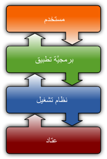

<!DOCTYPE html>
<html lang="en">
    <head>
        <title> Computer Basics  </title>
        <meta charset="utf-8">
        <link rel="icon" href="icon/online-course.png">  
     <link rel="stylesheet" href="./css/style.css">
     <meta name="description" content="موقع شخص">
    </head>
      <body>
        <header>
    <h2><a href="#" class="log">computer system </a></h2>
    
            <ul>
                <li ><a href="index.html" > الحاسوب </a></li>
                <li > <a class="active" > Software Computer </a> </li>
                <li ><a href="Network.html">NETWORK</a></li>
               
            </ul>
         </header>
<section class="main">
     
     
     
     
     
     
     
</section>
<div class="content">
<center><h1>Software Computer</h1></center>
<h2>Software</h2>
    <p>مصطلح بيعبر عن العمليات اللى بتحصل فى الاجهزه المبرمجه و عاده بتبقى غير ملمومسه و هى الجزء المكملHardware و اللى بيعبر عن المكونات الماديه للأجهزه دى (العتاد), فانظمه تشغيل الكومبيوتر Operating systems زي نظام التشغيل ويندوز هى سوفتوير و بالمقابل الشاشه و الكيبورد و باقى المكونات هى Hardware
    </p><br>
    <div class="card">
        <div class="card_image">
    <center>   </center>
</div>
</div>
    <h2>Software types:</h2>
    <p>اولا:برنامج النظام System Software</p><br>
   <p>المقصود بها نظام التشغيل مثل Microsoft windows، حيث تساعد برامج النظام، المستخدم والكمبيوتر على العمل معًا بسلاسة. هذا يجعل برنامج النظام ضروريًا لتشغيل أي نوع من برامج التطبيقات بالإضافة إلى نظام الكمبيوتر بأكمله. بدون برمجية النظام هذه فإن جهاز الحاسوب سيكون مجرد دوائر كهربائية وأسلاك، لا فائدة منها</p>
    <h2>ثانياً: تطبيق البرمجيات Application Software</h2>
    <p>هذا هو النوع الأكثر شيوعًا لبرامج الكمبيوتر، ويمكن تعريفه على أنه برامج المستخدم النهائي التي تساعدك على أداء المهام أو تحقيق النتيجة المرجوة.
    </p><br>
    <h2>ثالثاً: برمجة البرمجيات Programming Software</h2>
    <p>في حين أن برامج التطبيقات مصممة للمستخدمين النهائيين، وبرامج النظام مصممة لأجهزة الكمبيوتر، فإن برامج البرمجة مخصصة لمبرمجي الكمبيوتر والمطورين الذين يكتبون التعليمات البرمجية. هذه هي البرامج التي تُستخدم لكتابة البرامج الأخرى وتطويرها واختبارها وتصحيحها. ومثال على ذلك لغات برمجة مثل Python و C ++ وغيرها.</p><br>
    <h2>رابعاً: برنامج التشغيل الخاص بتعريف الأجهزة Driver Software </h2>
    <p>غالبًا ما يُعتبر هذا البرنامج نوعًا من برامج النظام. حيث يعمل برنامج التشغيل ويتحكم في الأجهزة المتصلة بجهاز الكمبيوتر</p><br>
    <h1> برنامج النظام<br>
         System Software</h1>
    <h2>نظام التشغيل DOS:</h2>
    <p>هذا النظام يعتبر من الأنظمة القديمة جدا في استخدامها`فهو من اختراع  شركة IBM وقد بدا رسميا في العمل في عام 1981 م حيث قام رئيس الشركة بيل غيس بتطوير هذا النظام وأصبح من ضمن الأنظمة التي تعمل علي تشغيل الأوامر النصية من المستخدمين أما عن اهمية هذا النظام فانه كان يعد وقته نواة المشاريع التقنية التي قامت الشركة بتطويها بعد ذلك.</p><br>
    <h2>نظام التشغيل لينكس:</h2>
    <p>واحد من اهم أنظمة التشغيل وله العديد من المزايا فهو نظام مفتوح المصدر كما يتميز بأنه له مزايا عديدة من حيث الرسومات الجميلة و البسيطه كما ان له اصدرات مختلفه وقد طوره مصمموه ليكون أكثر حماية وأمان من أنظمة التشغيل لأخري وله ميزة كبيرة ايضا وهي المجانية في لااستخدام وهذا يختلف عن بعض أنظمة التشغيل التي صدرت بعده.</p><p></p><br>
    <h2>نظام التشغيل هايكو Haiku:</h2>
    <p>هوه من أنظمة التشغيل المجانية مثل لينكس وله العديد من المزايا مثل البساطه و الجمال و في الشكل و السرعة وقد تم اطلقه أول مره عام 2002م وهو من الأنظمة اتي تتبع الأنظمة المستخدمة للاستخدام الشخصي.</p><br>
    <h2>نظام التشغيل كروم :</h2>
    <p>هوه من الانظمة الخاصة التي تعتمد علي نفس نواة لينكس التكنولوجية وهو يتميز بسطح المكتب الفريد من نوعه ويمكن تنزيلة بسهوله من الانترنت علي جميع أجهزة الحاسوب ولاستفادة كافة المميزات التي يحتوي عليها </p><br>
    <h2>نظام تشغيل Microsoft Windows:</h2>
    <p>نظام التشغيل ويندوز هو نظام تشغيل كمبيوتر تمَّ تطويره من قِبَل شركة مايكروسوفت بهدف تشغيل أجهزة الحاسوب الشخصية، وهو نظام تشغيل يضم أول واجهة مستخدم نوع GUI خاصة بأجهزة الحاسوب، وتتوافق مع IBM، وحالياً سيطر نظام التشغيل ويندوز على سوق أجهزة الحواسيب، حيث تُستخدم إصدارات ويندوز بنسبة 90%.</p><br>
    <div class="card">
        <div class="card_image">
    <center>   </center>
</div>
</div>
    <h2>Microsoft Windows Types:</h2>
    <p>ويندوز 1 : في عام 1985 تم إطلاق نسخة ويندوز 1 والتي كانت بها القليل من الخصائص<br>
        ويندوز 2 : بعد ويندوز 1 بعامين تم إطلاق نسخة ويندوز 2 والتي تميزت تلك النسخة. بأن يمكن أن يقوم المستخدم بإخفاء أي صفحة من دون أن يقوم بعملية تصغير لها أو تكبير.<br>
        ويندوز3 : وهو النوع المتطور من نسخة ويندوز وهو من أول الأنظمة التي كانت تعتمد على الوجود الفعلي للهارد ديسك أو الجزء الخاص بالمساحة. حتى يتم عمل جهاز الكمبيوتر، ويتمكن من تخزين الملفات، وتم التعديل عليها وإضافة الخطوط التي يمكن أن يتم استخدامها في عملية الكتابة.<br>
        ويندوز95 : وهي النسخة التي تم العمل عليها في الكثير من الأعوام حتى تم إضافة زي البدء أو القائمة إلى تلك النسخة المتطورة. ويندوز 98 :  في عام 1998 تمت إضافة الكثير من التعديلات على تلك النسخة حتى انه أصبح بإمكان المستخدم القيام باستخدام الإيميل. أو تلك البرامج التي يمكن أن تقوم من خلالها بالمراسلة</p><br>
    <h2>System Software Types:</h2>
    <p>ويندوز 2000: من أهم نسخ الويندوز التي تم التعديل عليها والعمل على زيادة سرعتها. اكس بي( يعد النسخة المتطورة من ويندوز 2000).
        ويندوز فيستا : إصدار عام 2007 والذي تمت إضافة الكثير من المميزات والبرامج الإضافية أليه.
        ويندوز 7 و8 و 10:  وكل تلك النسخ التي هي موجودة في الوقت الحالي تم التعديل عليها في كل عام من تلك الأعوام، حتى يمكنها أن تقدم الكثير من خدمات التقنية للمستخدم وتجعل استخدام الحاسب الآلي من الأمور السهلة التي لا يوجد بها أي عناء وتمكن المستخدم من الحصول على كافة تلك المميزات التي يمكن أن تتوفر في النسخ الجديدة والمتطورة والحديثة</p><br>
    <h2>Installing The Windows 7 Operating System:</h2>
    <p>اولا :-
        اهم خطوة وتعد من اهم الخطوات وهى –
        قم بالدخول الى قائمة boot manager وهى تكون عن طريق الضغط على مفتاح F12  او   F11   او  F9  او  F8   او F2    على حسب نوع الجهاز لديك سيحولك هذا الاختيار  الى قائمة تختار منها عن طريق الاسهم فى الكيبوردCD   او usb   على حسب الويندوز موجود معاك على ايه فلاشة او اسطوانةلو فلاشة هبقى USB  فى الاول  والعكس اذا كانت على اسطوانة</p><br>
<p>الثانية :
سوف تظهر لك في الشاشة ثلاثة إختيارات: الأول هو اللغة والثاني هو الوقت والعملة والثالث هواختيارات لوحة المفاتيح أو أسلوب الإدخال. قم باختيار الإعدادات الخاصة بك ثم اضغط على مفتاح التالي (Next)</p>><br>
<p>الخطوة الثالثة :
الآن النظام جاهز للتثبيت على الجهاز، فقم بالضغط على Install Now.<br>
<p>الخطوة الرابعة :
إقرا شروط الترخيص كاملةً. بعد الإنتهاء والموافقة على الشروط اضغط على علامة صح موافق ثم اضغط على مفتاح التالي (Next).</p><br>
<p>الخطوة الخامسة:
في الشاشة التالية يوجد بها اختياران الأول Upgrade إذا كنت تستخدم نظام تشغيل قديم وتعمل له ترقيه. أما الاختيار الثاني Custom فهو لتثبيت نظام التشغيل أول مرة وهو سوف يكون اختيارنا</p><br>
<p>الخطوة السادسة:
الآن اختر المكان الذي تريد وضع نظام التشغيل عليه وغالباً يكون التقسيم الخاص بالنظام System Partition .فى حالة عدم تقسيم القرص الصلب (Hard Disk) يمكنك اختيار خصائص القرص من Drive Options.</p><br>
<p>الخطوة السابعة:
عند اختيارك لخصائص القرص من Drive Options سوف تدخل على هذه الشاشة التي تمكنك من تقسيم القرص الصلب Hard disk وبناء أقسام جديدة (New Partition) ومسح لنظام تشغيل قديم مثل Windows XPوهى غالباً الحالة التي تكون موجودة لدى أغلبنا</p><br>
<p>الخطوة الثامنة: 
في حالة اختيارك لإلغاء نظام التشغيل السابق من قسم Partition موجود على القرص الصلب، سوف تظهر لك الرسالة في الشاشة التالية. لا تقلق، فهو يحذرك بأن جميع البيانات الموجودة على القسم سوف يقوم بمسحها، ولكن تأكد أنك تلغى القسم الخاص بنظام التشغيل وأن لا يوجد بيانات أخرى موجودة تحتاجها غير ملفات نظام التشغيل السابق.</p><br>
<p>الخطوة التاسعة:
يتم الآن تثبيت الملفات الخاصة بنظام التشغيل على جهازك الذي قد يأخذ بعض الوقت فعليك الإنتظار. في النهاية تتطلب تلك العملية إعادة تشغيل لجهازك.</p><br>
<p>الخطوة العاشرة:
الآن هو في المراحل الخيرة من تثبيت الملفات على جهازك، فعليك الانتظار.<br>
<p>الخطوة الحادية عشر:
في الشاشة الظاهرة قم بإدخال اسم المستخدم (User Name) واسم جهاز الحاسب(Computer Name) لعمل حساب (Account).</p><br>
<p>الخطوة الثانية عشر:
الآن ادخل كلمة السر (Password) الخاصة بالحساب الذي قمت بإنشائه في الخطوة السابقة ولا تنسى أن تدخل التلميح (Password Hint) وهي عدة كلمات تحددها لتذكرك بكلمة السر عندما تنساها.</p><br>
<p>الخطوة الثالثة عشر:
أدخل مفتاح التشغيل (Product Key) الخاصة بالنسخة وهى تكون موجودة على العلبة المرفقة بالاسطوانة الخاصة بنظام التشغيل، وإذا لم تدخله سوف تعمل النسخة لمدة 30 يوما فقط. ويفضل أن تقوم بعمل تنشيط لنظام التشغيل على شبكة الانترنت ويكون ذلك عن طريق وضع علامة صح للاختيار الموجودة أسفل المربع الخاص بمفتاح التشغيل.</p><br>
<p>الخطوة الرابعة عشر:
للمساعدة في حماية جهازك وتحسين عمل نظام التشغيل قم باختيار Use Recommended Settings الاختيار الأول ليقوم بذلك تلقائيا.</p><br>
<p>الخطوة الخامسة عشر:
حدد المنطقة الزمنية الخاصة بك. يمكنك أيضاً ضبط الوقت والتاريخ ثم الضغط على مفتاح التالي(Next).</p><br>
<p>الخطوة السادسة عشر:
الآن حدد موقع الحاسب الخاص بك واختر الشبكة. إذا كان الاستخدام منزلي فاختر Home Network.</p><br>
<p>الخطوة السابعة عشر:
    نظام التشغيل Windows 7 يضع اللمسات الأخيرة على إعدادات الكمبيوتر و يقوم بإعادة تشغيله، فعليك الانتظار.</p><br>
<p>الخطوة الثامنة عشر:
    جهازك جاهز للتعامل مع نظام التشغيل Windows 7 واليك شاشة عرض النظام.</p><br>
<center><embed src="video/ssss.mp4" width="900" height="500">
</center><br>
<center><h2> كيفيه تصطيب الويندوز</h2></center>


        <h2></h2>
    <p></p><br>
    <h2></h2>
    <p></p><br>
    <center> </center>
</div>
    <script src="main.js"></script>
</body>
</html>
